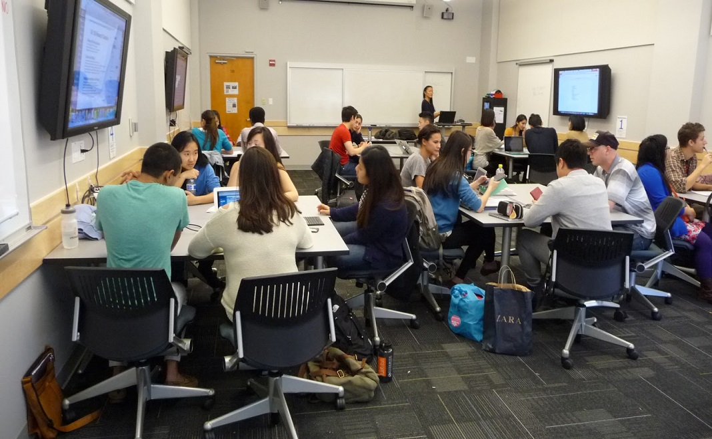

Foto-Foto Kegiatan Courses
Source Image :
https://encrypted-tbn0.gstatic.com/images?q=tbn:ANd9GcR0CRiCUs_tUbmGmXCdLjTqiqtpwXL7sJkRqg&usqp=CAU
http://ppkdjakpus.com/2019/11/21/kegiatan-pelatihan-operator-komputer-angkatan-iv-2019/
https://asset-a.grid.id/crop/0x0:0x0/360x240/photo/2020/03/23/3393161271.jpg